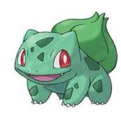

Grama / Veneno
#001 Bulbasaur
Geração I — Kanto
Bulbasaur é do tipo Planta e evolui para Ivysaur e depois para Venusaur.
Parecido com um sapo, o Pokémon tem um pequeno bulbo em suas costas que armazena energia para a criatura.
Ao evoluir o bulbo começa a desabrochar até se tornar uma grande flor na evolução final.